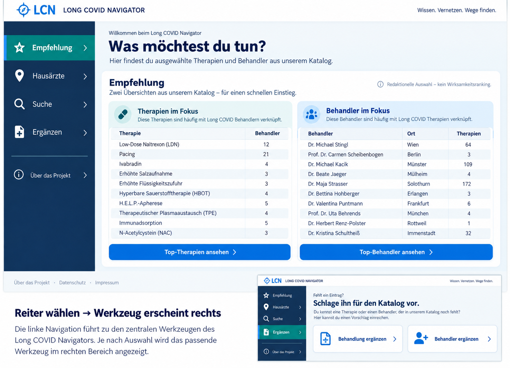
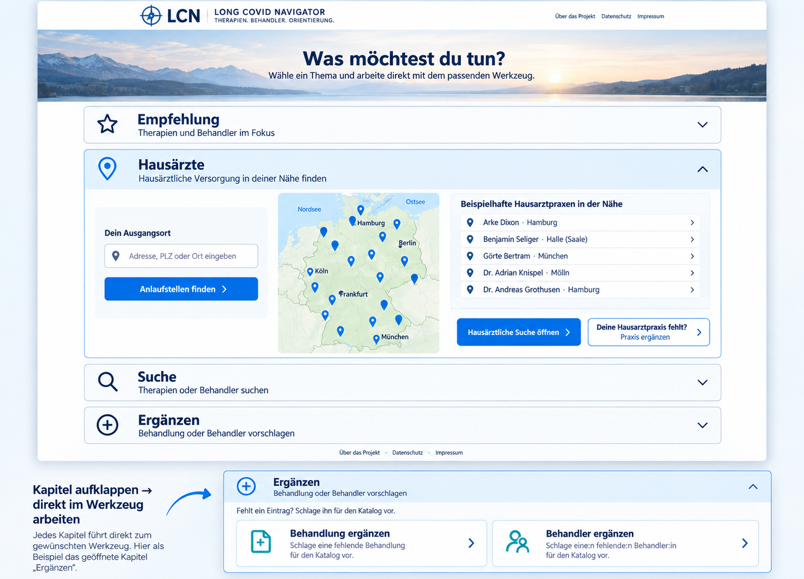
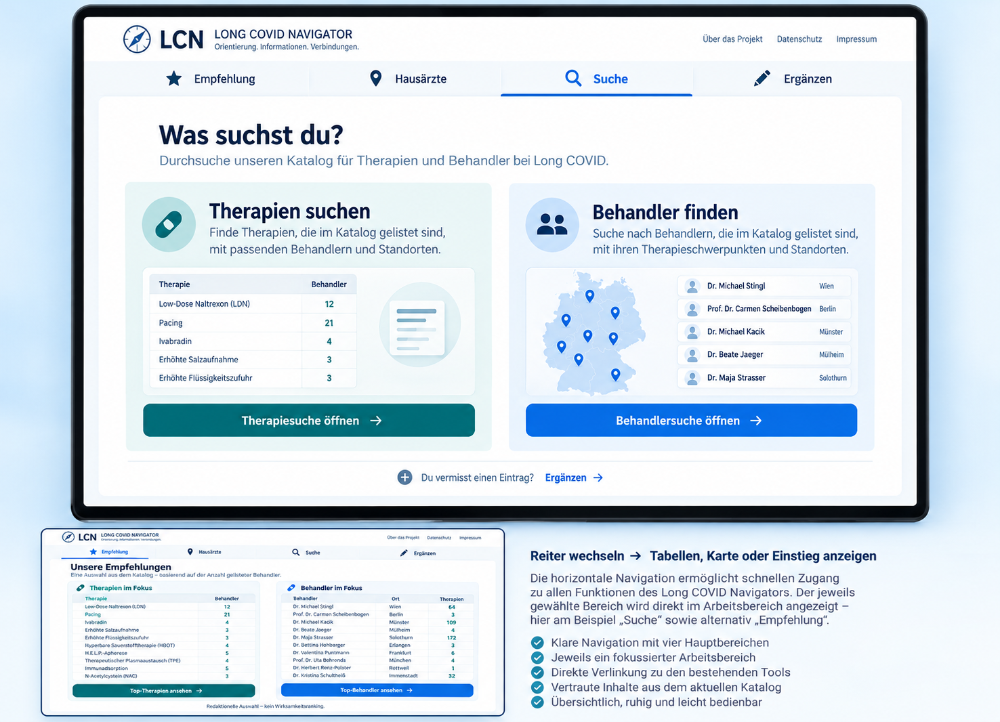
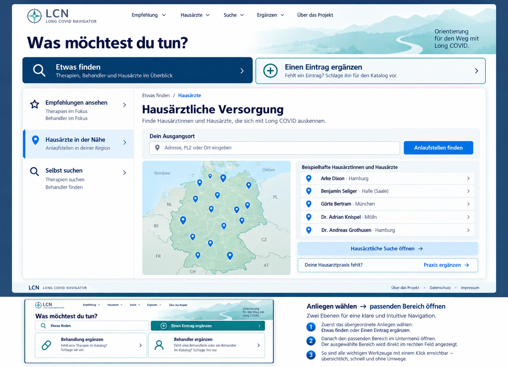
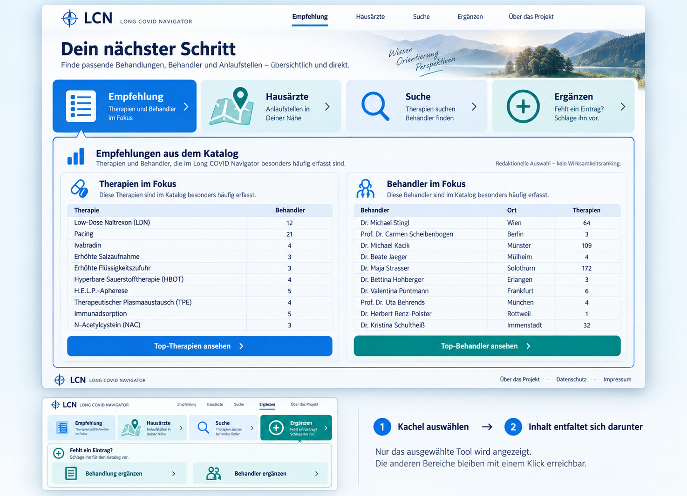

LONG COVID NAVIGATOR · DESIGNRUNDE 03Wie kommen Nutzer zur Tabelle, zur Karte und zum Eintrag?
Fünf unterschiedliche Navigationsmodelle für dieselben vorhandenen Werkzeuge. Jedes Board zeigt einen geöffneten Hauptbereich und einen kleinen weiteren Zustand. Die Abbildungen sind grafische Mockups, keine bedienbaren Prototypen.
Inhalt bleibt, Nutzerführung ändert sich.
Empfehlung · Hausärzte · Suche · Ergänzen. Tabellen, Kartenwerkzeug und bestehende Such- und Vorschlagsseiten bleiben erhalten; inaktive Bereiche werden je nach Konzept eingeklappt oder über Reiter erreicht.
01 · Seitliche Reiter
So führt es durch die Seite: Empfehlung → Tabelle · Hausärzte → Karte · Suche → Suchseite · Ergänzen → Formularauswahl
Geöffnet: Empfehlung. Kleiner Zweitzustand: Ergänzen.
Warum diese Gestaltung?Der Wegweiser bleibt beim Wechsel zwischen den Werkzeugen sichtbar. Besonders geeignet, wenn Nutzer mehrere Bereiche nacheinander vergleichen.
Was bei der Umsetzung zähltBenötigt auf dem Desktop Platz in der Breite. Mobil wird daraus eine kompakte Bereichsauswahl oberhalb des Inhalts.

02 · Aufklappbare Kapitel
So führt es durch die Seite: Kapitel anklicken → vorhandenes Werkzeug klappt direkt darunter auf
Geöffnet: Hausärzte mit Karte und Ergebnisliste. Kleiner Zweitzustand: Ergänzen.
Warum diese Gestaltung?Die Startseite bleibt zunächst überschaubar. Karte und Tabellen müssen nicht gleichzeitig vollständig sichtbar sein. Kurze Zusammenfassungen erklären auch geschlossene Bereiche.
Was bei der Umsetzung zähltEin Werkzeug ist erst nach dem Öffnen sichtbar. Der geöffnete Bereich sollte über einen direkten Link erreichbar und der Zustand beim Zurückkehren erhalten bleiben.

03 · Eine Arbeitsfläche
So führt es durch die Seite: Reiter wählen → Arbeitsfläche wechselt · Suche → Therapie- oder Behandlersuche öffnen
Geöffnet: Suche. Kleiner Zweitzustand: Empfehlung.
Warum diese Gestaltung?Die Werkzeuge teilen sich einen festen, großzügigen Bereich. Suche und Ergänzen wirken wie gleichwertige Aufgaben statt wie zwei spätere Kästen auf einer langen Seite.
Was bei der Umsetzung zähltNur der aktive Bereich ist sichtbar. Reiter müssen eindeutig benannt sein; für Mobilgeräte ist eine umbrechende Bereichsauswahl sinnvoll.

04 · Finden oder ergänzen
So führt es durch die Seite: Anliegen wählen → Unterbereich auswählen → Tabelle, Karte oder vorhandene Suchseite nutzen
Geöffnet: Etwas finden / Hausärzte. Kleiner Zweitzustand: Einen Eintrag ergänzen.
Warum diese Gestaltung?Die erste Entscheidung ist in Alltagssprache formuliert. Die beiden grundverschiedenen Absichten – etwas finden oder einen Eintrag vorschlagen – erhalten ein klares visuelles Gewicht.
Was bei der Umsetzung zähltDie zusätzliche Navigationsebene kostet einen Auswahlvorgang. Direkte Links und ein gut gewählter Anfangszustand verhindern unnötige Umwege.

05 · Kacheln, die sich öffnen
So führt es durch die Seite: Kachel wählen → zugehöriger Inhalt öffnet sich direkt darunter
Geöffnet: Empfehlung. Kleiner Zweitzustand: Ergänzen.
Warum diese Gestaltung?Ein grafischer Einstieg bleibt erhalten, während die konkrete Tabelle oder Karte auf derselben Seite erscheint. Die Verbindung zwischen Auswahl und Inhalt ist sichtbar.
Was bei der Umsetzung zähltDer Inhaltswechsel darf die Seite nicht unvermittelt springen lassen. Aktive Kachel, sichtbare Überschrift und Fokusführung müssen den Wechsel erklären.

Meine Empfehlung: 05 für den Einstieg, 01 für häufige Nutzung am Desktop.
Die Kacheln geben der Startseite einen grafischen Charakter; die Seitenreiter bieten einen dauerhaft sichtbaren Wegweiser.
Ausführliche Begründung und Umsetzungshinweise · ImageGen-Prompts
24. Oktober 2026 · Die bestehende Startseite wurde nicht verändert.